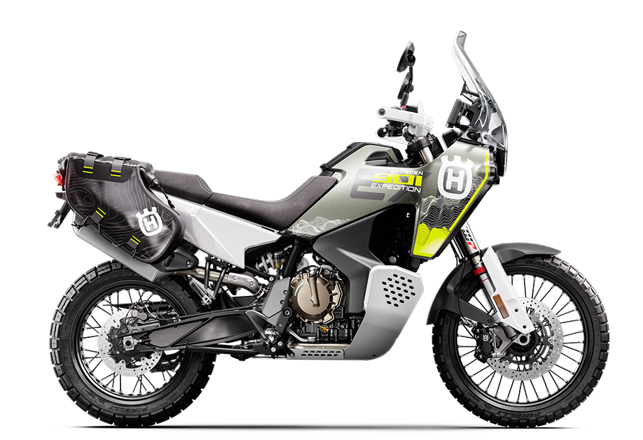
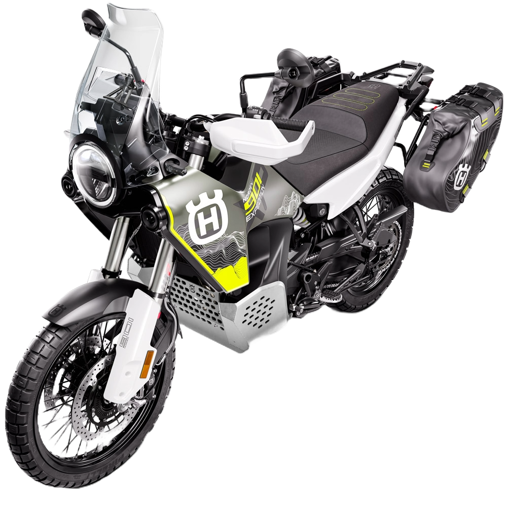
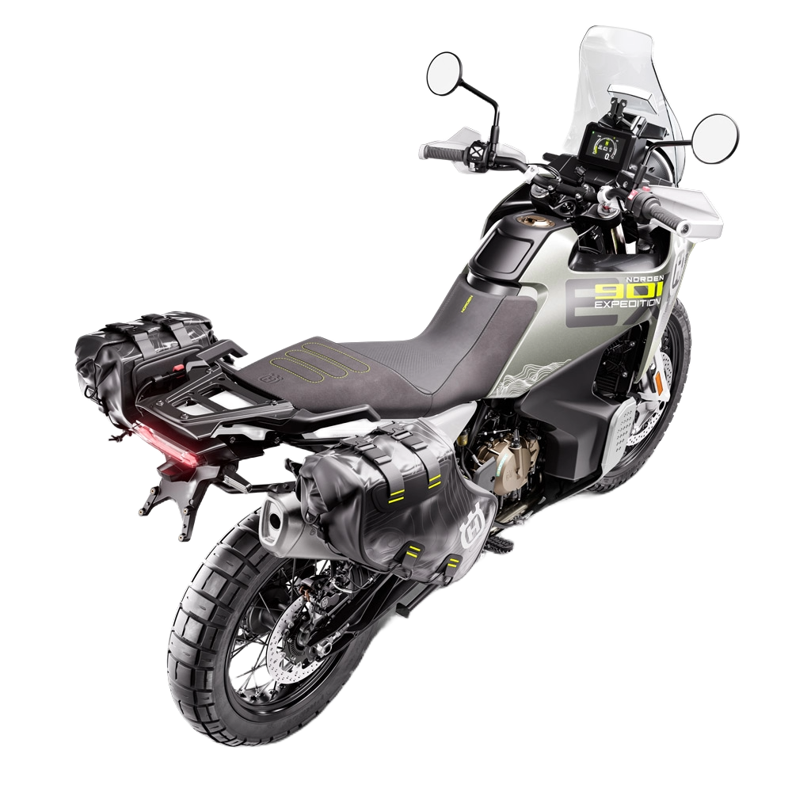

Norden 901 Expedition
- Kategorija: Adventure
- Brend: Husqvarna
- Kvačilo: PASC™ slipper clutch, cable operated
- Menjač: 6-stepeni
- Težina: 214,5 kg
- Visina od tla: 270 mm
- Visina sedišta: 887/907 mm
- Zadnji disk: 260 mm
- Rezervoar: 19 l
O modelu: Norden 901 Expedition
Izuzetna evolucija pionirskog modela Norden 901, verzija Expedition dolazi opremljena svom dodatnom opremom neophodnom za idealan ekspedicioni motocikl. Udobnost je značajno povećana zahvaljujući WP XPLOR ogibljenju specifičnom za offroad, koje nudi duži hod od 240 mm i potpuno je podesivo za personalizovano iskustvo vožnje.
Grejano sedište i ručice čine vožnju u hladnim uslovima prijatnom, dok Touring vetrobran smanjuje zamor usmeravajući vetar dalje od vozača. Dizajniran i napravljen za dosezanje najudaljenijih destinacija, ovaj vrhunski pouzdan i tehnički unapređen putni motocikl je spreman za pionire. Tvoja sledeća avantura počinje ovde.